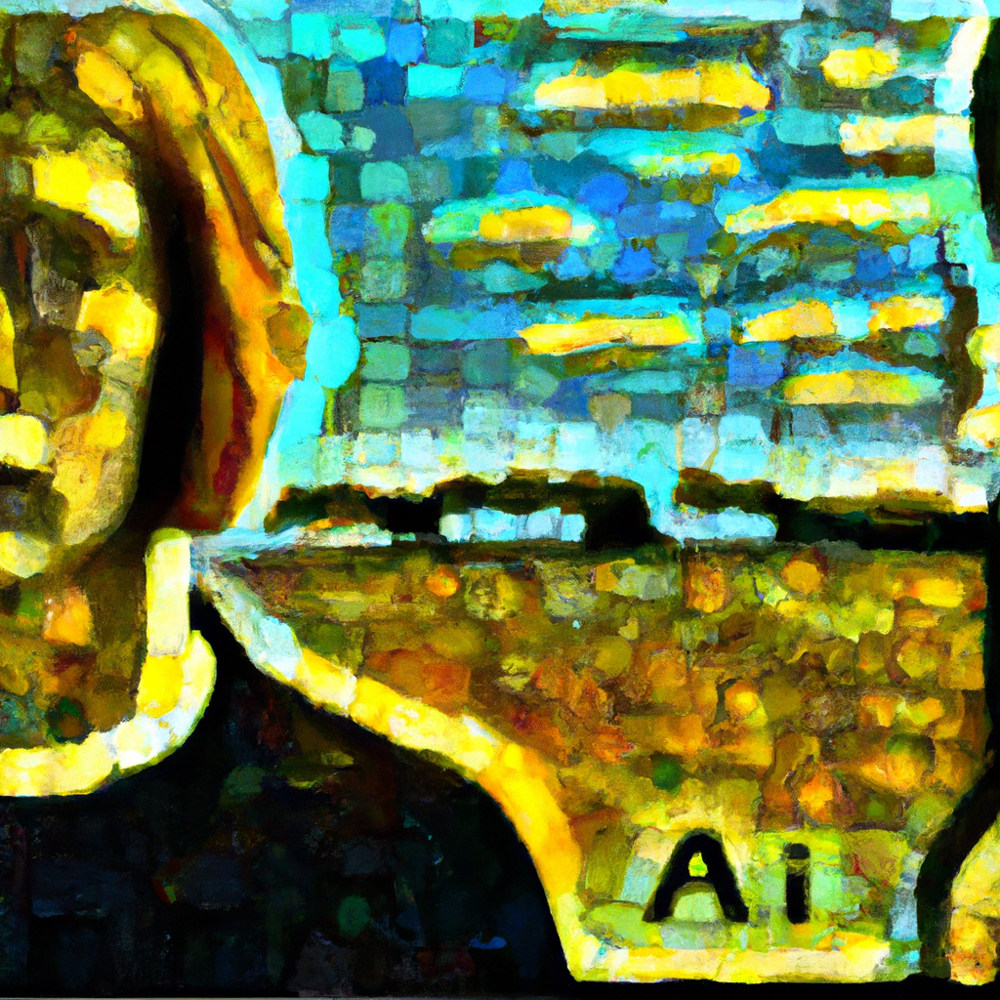

The future of AI
Artificial intelligence (AI) is changing the way software development projects are being managed. As the technology continues to evolve, project managers (PMs) need to understand how AI can be used to improve project outcomes.
AI has the potential to automate mundane tasks and reduce the amount of effort required to manage a project. For example, AI can be used to analyze project data and develop projections about future trends. It can also be used to help optimize task management and resource allocation.
PMs can also use AI to help identify potential risks and issues in a project. By analyzing data from past projects, AI can help PMs anticipate potential problems and develop strategies to address them. AI can even be used to help identify areas of improvement for future projects.
In addition to these applications, AI can help PMs better understand their team members and their work. AI-enabled tools can help PMs monitor team member performance and identify areas where team members may need additional training or support.
Overall, AI has the potential to revolutionize the way PMs manage software development projects. By leveraging AI, PMs can make better decisions, reduce the amount of effort required to manage projects, and increase the likelihood of successful outcomes.